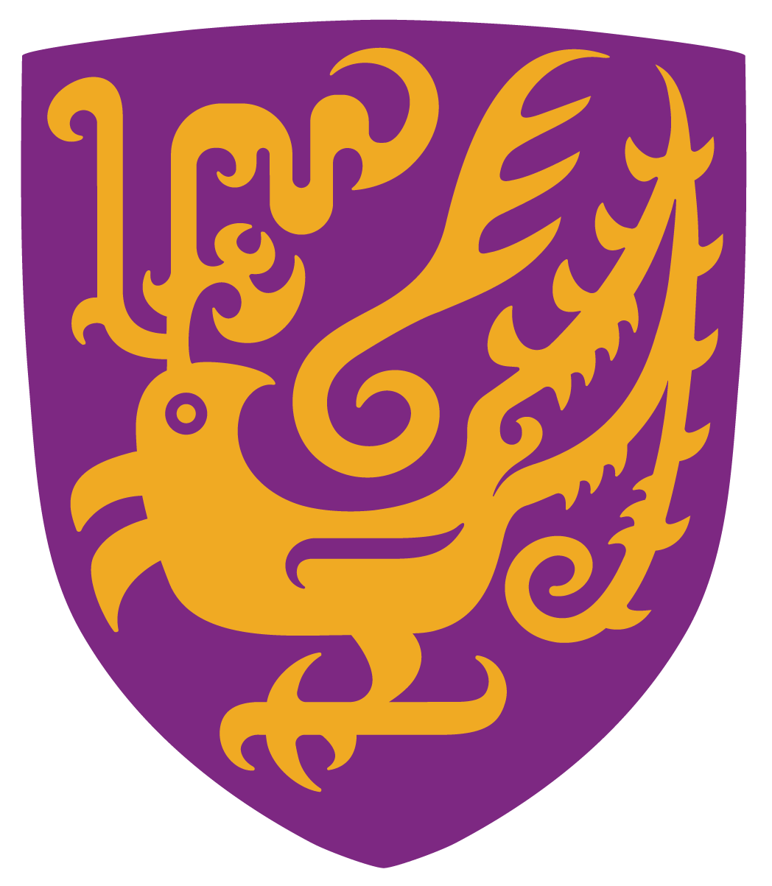

赵志政
Zhizheng Zhao
Hi, I'm Zhizheng Zhao, an undergraduate student (junior) at the School of Physics, Peking University. Under the guidance of Professor Qite Li, I am researching the use of muons to detect dark matter, focusing on improving detection sensitivity and precision.
I’m also passionate about artificial intelligence and am currently collaborating with Renrui Zhang, a PhD student at the Chinese University of Hong Kong, to explore the application of contrastive optimization techniques (COT) in text-to-image (T2I) tasks.
Access more info / Contack me through the following links:
Education📖
|
|
Ph.D. in Artificial Intelligence
Stanford University, 2025
Focus: Machine Learning, Natural Language Processing, AI Ethics
|
Mask4Align: Aligned Entity Prompting with Color Masks for Multi-Entity Localization Problems
Haoquan Zhang,
Ronggang Huang,
Yi Xie,
Huaidong Zhang
Pretrained VLMs excel in accurately recognizing and precisely localizing entities within VQA tasks. However, in visual scenes with multiple entities, textual descriptions struggle to distinguish the entities from the same category effectively. Consequently, the existing VQA dataset cannot adequately cover scenarios involving multiple entities. Therefore, we introduce a Mask for Align (Mask4Align) method to determine the entity's position in the given image that best matches the user input question. This method incorporates colored masks into the image, enabling the VQA model to handle discrimination and localization challenges associated with multiple entities.
[Paper]
[Submission Journey]
CVPR 2024
Asymmetric Image Retrieval with Semi-Collaborative Distillation
Yi Xie*,
Haoquan Zhang*,
Xuandi Luo,
Huaidong Zhang,
Xuemiao Xu,
Shengfeng He
* Co-first authorship
In asymmetric image retrieval systems, there is a significant capacity gap between the query and gallery network. The low-capacity query network struggles to effectively store and understand knowledge from the high-capacity teacher network. Therefore, we introduce a simple yet effective semi-collaborative distillation (SCD) framework, which can additionally adjust the gallery network because the gallery network has a redundant capacity to carry specific knowledge from the query network. Specifically, as the query network converges, we incrementally unfreeze the gallery network to smoothly adjust the feature space of the gallery network to be consistent with that of the query network.
[Paper]
[Code]
Under Review
Design of Auxiliary Diagnosis Algorithm for Schizophrenia Based on Feature Fusion of EEG and ECG
[Entry (Chinese)]
Entry, 2023, National Biomedical Engineering Innovation Design Competition for College Students
Calculated brain functional network features, heart rate variability features and heart-brain coupling features to build machine learning models for automatic diagnosis; Deep learning models using ResNet were built based on original EEG and ECG also.
Second Prize. (6%)
Perfect GunMayhem Remake: A 2D Shooting PVP Game Based on Cocos2d-x
[Github] ·
[Project Page] ·
[Original Game] ·
[Art Assets (.ai)]
Course design, 2022, Advanced Language Programming (C++)
GunMayhem Remake is a project independently completed by our team members, covering all aspects, including source code, game artwork, and music assets. You can play our executable file.
Shoutout to Kevin Gu for creating this incredible game!
Final Score: 99, 4.0/4.0. (1%)
Awards 🏆
TaiHu Innovation Prize (1%),
Highest scholarship, which awarded by the Wuxi governments, 2024
Second Prize (6%), *Medical AI Track
The National BME lnnovation Design Competition, China Society of Biomedical Engineering, 2023
Meritorious Winner (6%), *Prior to the release of ChatGPT 😏
The Interdisciplinary Contest in Modeling (ICM), COMAP, 2021
|
Experiences 🌍
Westlake University
Visiting Students
Advised by Yandong Wen
|
|
Do something insightful.
© 2024 Haoquan Zhang


|
|


{kind=link}